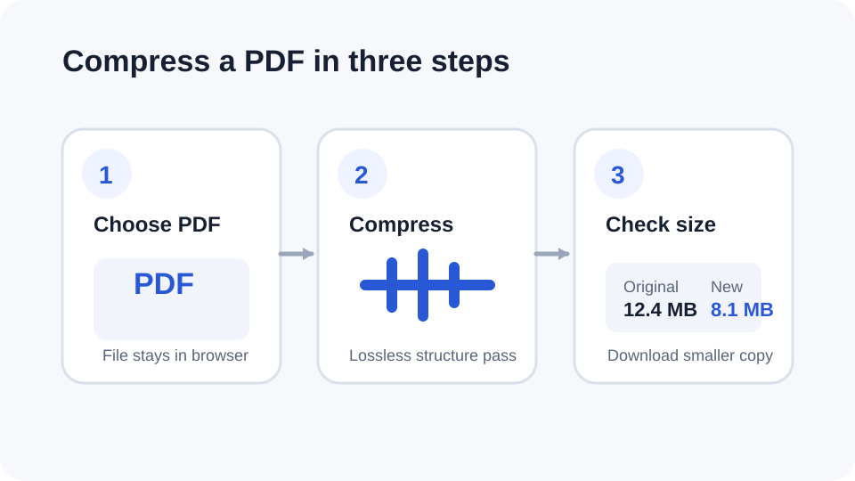

How to compress a PDF
PDF compression is not one technique. A file can shrink through lossless structural optimization, image recompression or removal of unnecessary content. The safest method depends on what is making the PDF large.
Updated September 28, 2026 · Reviewed by FreePDF Tools

What does “compress PDF” actually mean?
People searching for a compress PDF or PDF size reducer may have different goals. You may want a smaller email attachment, a faster upload, a smaller archive or a file that fits a portal's size limit. A smaller PDF can be produced in several ways, and not all of them preserve image quality.
How lossless PDF compression works
Lossless compression keeps the document's visual data intact while reducing structural overhead where possible. FreePDF Tools uses a browser-local qpdf pass that recompresses supported streams, recompresses existing Flate streams and generates compressed object streams.
QPDF documents these options as mechanisms for reducing PDF size; object streams can compress PDF objects, while --recompress-flate lets the compressor recompress existing Flate data.
Try the free PDF compressor
Open the Compress PDF tool, choose your file and let the browser create a smaller copy. The tool reports the original size, output size and percentage reduction before downloading a -compressed.pdf copy.
Why a scanned PDF may not shrink much
Scanned documents are often dominated by page images. If those images are already JPEG-compressed, a lossless PDF-only pass may have little room left to reduce the file. A much smaller result may require image resampling or JPEG quality reduction, which can change visual quality.
When should you use stronger compression?
Use stronger, potentially lossy image compression when the PDF is mostly photographs or scans and your goal is the smallest possible file for email or upload. Review the result carefully when text readability, signatures, diagrams or image quality matter.
Best practices before replacing the original
- Keep the original PDF until you have checked the compressed copy.
- Open the output and verify page count, links, forms and important visual content.
- Check the final file size against the upload or email limit.
- Do not assume a smaller PDF is automatically better if it loses information you need.
Frequently asked questions
Is lossless PDF compression always smaller?
No. If the source is already efficiently compressed, the lossless result can be nearly the same size or slightly larger. FreePDF Tools avoids downloading a larger replacement.
Does PDF compression reduce quality?
The FreePDF Tools compressor uses a lossless structural pass and does not intentionally lower JPEG image quality. Stronger image recompression is a separate operation.
Can I reduce a PDF below an email attachment limit?
Sometimes. The amount of reduction depends on the contents of the PDF. Image-heavy files may require image optimization for a larger reduction.
Can I compress a password-protected PDF?
Unlock the document first when you know the password, then compress the unencrypted copy.